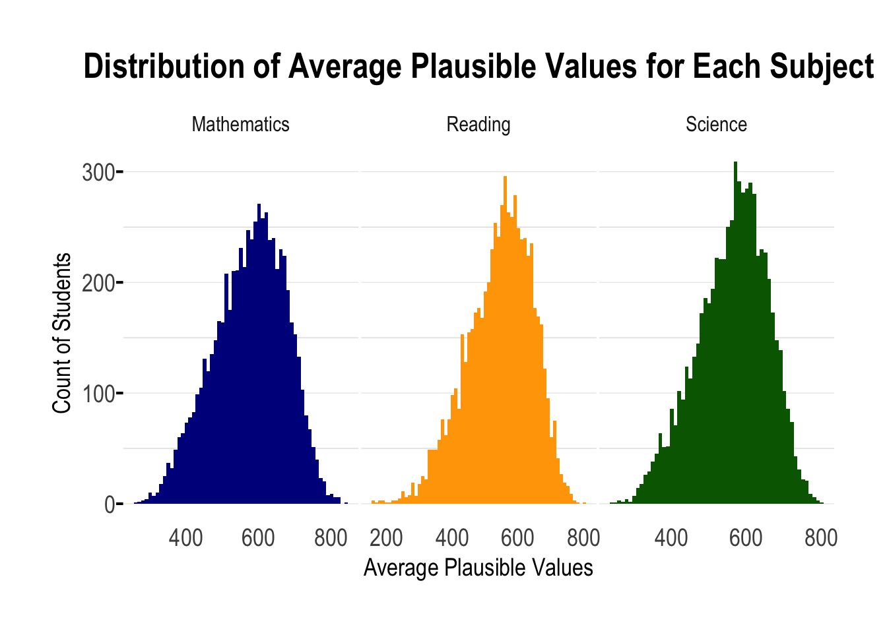
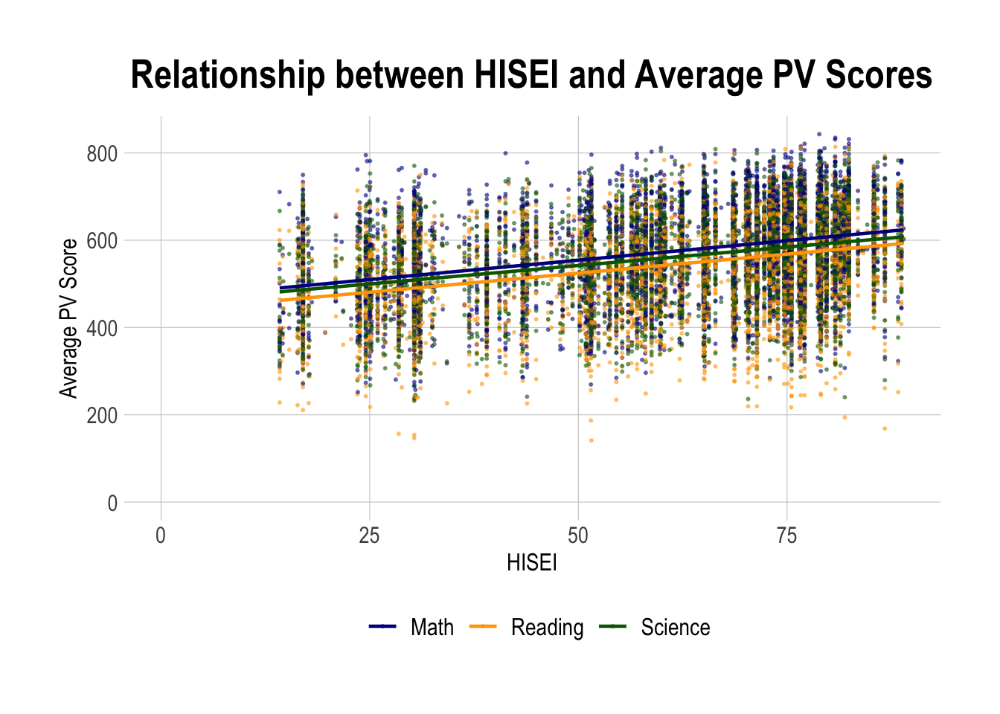

pacman::p_load(tidyverse, haven, ggrepel, patchwork,
ggthemes, hrbrthemes)Take-home Exercise 1
Project Brief
OECD education director Andreas Schleicher shared in a BBC article that “Singapore managed to achieve excellence without wide differences between children from wealthy and disadvantaged families.” (2016) Furthermore, several Singapore’s Minister for Education also started an “every school a good school” slogan.
The general public, however, strongly belief that there are still disparities that exist, especially between the elite schools and neighborhood school, between students from families with higher socioeconomic status and those with relatively lower socioeconomic status and immigration and non-immigration families.
Project Objectives
The 2022 Programme for International Student Assessment (PISA) data was released on December 5, 2022. PISA global education survey every three years to assess the education systems worldwide through testing 15 year old students in the subjects of mathematics, reading, and science.
In this take-home exercise, we are required to use appropriate Exploratory Data Analysis (EDA) methods and ggplot2 functions to reveal:
the distribution of Singapore students’ performance in mathematics, reading, and science, and
the relationship between these performances with schools, gender and socioeconomic status of the students.
Limit your submission to not more than five EDA visualisation.
1. Data Preparation
1.1 Installing R packages
pacman::p_load() function from the pacman package is used in the following code chunk to install and call the libraries of multiple R packages:
1.2 Importing Dataset
“Student questionnaire data file” from the PISA 2022 database is provided for the task.
The code chunk below uses read_sas() of haven to import PISA data into R environment.
stu_qqq <- read_sas("data/STU_QQQ_SAS/cy08msp_stu_qqq.sas7bdat")stu_qqq_SG <- stu_qqq %>%
filter(CNT == "SGP")write_rds(stu_qqq_SG,
"data/STU_QQQ_SAS/stu_qqq_SG.rds")We upload the file as stu_qqq_Sg.
stu_qqq_Sg <-
read_rds("data/STU_QQQ_SAS/stu_qqq_SG.rds")1.3 Summary Statistics
We first display first 5 rows using head().
head(stu_qqq_Sg, 5)# A tibble: 5 × 1,279
CNT CNTRYID CNTSCHID CNTSTUID CYC NatCen STRATUM SUBNATIO REGION OECD
<chr> <dbl> <dbl> <dbl> <chr> <chr> <chr> <chr> <dbl> <dbl>
1 SGP 702 70200052 70200001 08MS 070200 SGP01 7020000 70200 0
2 SGP 702 70200134 70200002 08MS 070200 SGP01 7020000 70200 0
3 SGP 702 70200112 70200003 08MS 070200 SGP01 7020000 70200 0
4 SGP 702 70200004 70200004 08MS 070200 SGP01 7020000 70200 0
5 SGP 702 70200152 70200005 08MS 070200 SGP01 7020000 70200 0
# ℹ 1,269 more variables: ADMINMODE <dbl>, LANGTEST_QQQ <dbl>,
# LANGTEST_COG <dbl>, LANGTEST_PAQ <dbl>, Option_CT <dbl>, Option_FL <dbl>,
# Option_ICTQ <dbl>, Option_WBQ <dbl>, Option_PQ <dbl>, Option_TQ <dbl>,
# Option_UH <dbl>, BOOKID <dbl>, ST001D01T <dbl>, ST003D02T <dbl>,
# ST003D03T <dbl>, ST004D01T <dbl>, ST250Q01JA <dbl>, ST250Q02JA <dbl>,
# ST250Q03JA <dbl>, ST250Q04JA <dbl>, ST250Q05JA <dbl>, ST250D06JA <chr>,
# ST250D07JA <chr>, ST251Q01JA <dbl>, ST251Q02JA <dbl>, ST251Q03JA <dbl>, …Then, we check the structure of stu_qqq_Sg.
str(stu_qqq_Sg)tibble [6,606 × 1,279] (S3: tbl_df/tbl/data.frame)
$ CNT : chr [1:6606] "SGP" "SGP" "SGP" "SGP" ...
..- attr(*, "label")= chr "Country code 3-character"
$ CNTRYID : num [1:6606] 702 702 702 702 702 702 702 702 702 702 ...
..- attr(*, "label")= chr "Country Identifier"
$ CNTSCHID : num [1:6606] 70200052 70200134 70200112 70200004 70200152 ...
..- attr(*, "label")= chr "Intl. School ID"
$ CNTSTUID : num [1:6606] 70200001 70200002 70200003 70200004 70200005 ...
..- attr(*, "label")= chr "Intl. Student ID"
$ CYC : chr [1:6606] "08MS" "08MS" "08MS" "08MS" ...
..- attr(*, "label")= chr "PISA Assessment Cycle (2 digits + 2 character Assessment type - MS/FT)"
$ NatCen : chr [1:6606] "070200" "070200" "070200" "070200" ...
..- attr(*, "label")= chr "National Centre 6-digit Code"
$ STRATUM : chr [1:6606] "SGP01" "SGP01" "SGP01" "SGP01" ...
..- attr(*, "label")= chr "Stratum ID 5-character (cnt + original stratum ID)"
$ SUBNATIO : chr [1:6606] "7020000" "7020000" "7020000" "7020000" ...
..- attr(*, "label")= chr "Adjudicated sub-region code 7-digit code (3-digit country code + region ID + stratum ID)"
$ REGION : num [1:6606] 70200 70200 70200 70200 70200 70200 70200 70200 70200 70200 ...
..- attr(*, "label")= chr "REGION"
$ OECD : num [1:6606] 0 0 0 0 0 0 0 0 0 0 ...
..- attr(*, "label")= chr "OECD country"
$ ADMINMODE : num [1:6606] 2 2 2 2 2 2 2 2 2 2 ...
..- attr(*, "label")= chr "Mode of Respondent"
$ LANGTEST_QQQ: num [1:6606] 313 313 313 313 313 313 313 313 313 313 ...
..- attr(*, "label")= chr "Language of Questionnaire"
$ LANGTEST_COG: num [1:6606] 313 313 313 313 313 313 313 313 313 313 ...
..- attr(*, "label")= chr "Language of Assessment"
$ LANGTEST_PAQ: num [1:6606] NA NA NA NA NA NA NA NA NA NA ...
..- attr(*, "label")= chr "Language of Parent Questionnaire"
$ Option_CT : num [1:6606] NA NA NA NA NA NA NA NA NA NA ...
..- attr(*, "label")= chr "Creative Thinking Option"
$ Option_FL : num [1:6606] NA NA NA NA NA NA NA NA NA NA ...
..- attr(*, "label")= chr "Financial Literacy Option"
$ Option_ICTQ : num [1:6606] 1 1 1 1 1 1 1 1 1 1 ...
..- attr(*, "label")= chr "ICT Questionnaire Option"
$ Option_WBQ : num [1:6606] 0 0 0 0 0 0 0 0 0 0 ...
..- attr(*, "label")= chr "Well-Being Questionnaire Option"
$ Option_PQ : num [1:6606] 0 0 0 0 0 0 0 0 0 0 ...
..- attr(*, "label")= chr "Parent Questionnaire Option"
$ Option_TQ : num [1:6606] 0 0 0 0 0 0 0 0 0 0 ...
..- attr(*, "label")= chr "Teacher Questionnaire Option"
$ Option_UH : num [1:6606] 0 0 0 0 0 0 0 0 0 0 ...
..- attr(*, "label")= chr "Une Heure Option"
$ BOOKID : num [1:6606] 4 45 8 40 42 15 13 39 14 7 ...
..- attr(*, "label")= chr "Form Identifier"
$ ST001D01T : num [1:6606] 10 10 10 10 10 10 10 10 10 10 ...
..- attr(*, "label")= chr "Student International Grade (Derived)"
$ ST003D02T : num [1:6606] 10 6 7 2 9 9 3 4 8 6 ...
..- attr(*, "label")= chr "Student (Standardized) Birth - Month"
$ ST003D03T : num [1:6606] 2006 2006 2006 2006 2006 ...
..- attr(*, "label")= chr "Student (Standardized) Birth -Year"
$ ST004D01T : num [1:6606] 1 2 2 2 1 1 2 2 1 2 ...
..- attr(*, "label")= chr "Student (Standardized) Gender"
$ ST250Q01JA : num [1:6606] 2 1 1 2 2 2 1 1 2 2 ...
..- attr(*, "label")= chr "Which of the following are in your [home]: A room of your own"
$ ST250Q02JA : num [1:6606] 1 1 1 1 1 1 1 1 1 1 ...
..- attr(*, "label")= chr "Which of the following are in your [home]: A computer (laptop, desktop, or tablet) that you can use for school work"
$ ST250Q03JA : num [1:6606] 1 1 2 1 1 1 1 1 1 1 ...
..- attr(*, "label")= chr "Which of the following are in your [home]: Educational Software or Apps"
$ ST250Q04JA : num [1:6606] 1 1 1 1 1 1 1 1 1 1 ...
..- attr(*, "label")= chr "Which of the following are in your [home]: Your own [cell phone] with Internet access (e.g. smartphone)"
$ ST250Q05JA : num [1:6606] 1 1 1 1 1 1 1 1 1 1 ...
..- attr(*, "label")= chr "Which of the following are in your [home]: Internet access (e.g. Wi-fi) (excluding through smartphones)"
$ ST250D06JA : chr [1:6606] "7020002" "7020001" "7020001" "7020002" ...
..- attr(*, "label")= chr "Which of the following are in your home? <Country-specific item 1>"
$ ST250D07JA : chr [1:6606] "7020002" "7020001" "7020002" "7020002" ...
..- attr(*, "label")= chr "Which of the following are in your home? <Country-specific item 2>"
$ ST251Q01JA : num [1:6606] 2 1 2 1 2 2 2 1 3 3 ...
..- attr(*, "label")= chr "How many of these items are there at your [home]: Cars, vans, or trucks"
$ ST251Q02JA : num [1:6606] 1 4 1 2 2 1 1 1 1 1 ...
..- attr(*, "label")= chr "How many of these items are there at your [home]: Mopeds or motorcycles"
$ ST251Q03JA : num [1:6606] 3 3 3 3 2 2 3 3 4 3 ...
..- attr(*, "label")= chr "How many of these items are there at your [home]: Rooms with a bath or shower"
$ ST251Q04JA : num [1:6606] 3 3 3 3 2 3 3 3 4 3 ...
..- attr(*, "label")= chr "How many of these items are there at your [home]: Rooms with a [flush toilet]"
$ ST251Q06JA : num [1:6606] 3 4 2 2 1 2 2 3 4 1 ...
..- attr(*, "label")= chr "How many of these items are there at your [home]: Musical instruments (e.g. guitar, piano, [country-specific example])"
$ ST251Q07JA : num [1:6606] 3 2 1 1 4 1 4 1 4 3 ...
..- attr(*, "label")= chr "How many of these items are there at your [home]: Works of art (e.g. paintings, sculptures, [country-specific example])"
$ ST251D08JA : chr [1:6606] "9999997" "9999997" "9999997" "9999997" ...
..- attr(*, "label")= chr "How many of these items are there at your home? <Country-specific item 1>"
$ ST251D09JA : chr [1:6606] "9999997" "9999997" "9999997" "9999997" ...
..- attr(*, "label")= chr "How many of these items are there at your home? <Country-specific item 2>"
$ ST253Q01JA : num [1:6606] 7 8 7 6 7 7 8 8 8 7 ...
..- attr(*, "label")= chr "How many [digital devices] with screens are there in your [home]?"
$ ST254Q01JA : num [1:6606] 2 3 2 2 2 2 2 2 2 2 ...
..- attr(*, "label")= chr "How many of the following [digital devices] are in your [home]: Televisions"
$ ST254Q02JA : num [1:6606] 1 2 2 1 3 2 2 5 2 2 ...
..- attr(*, "label")= chr "How many of the following [digital devices] are in your [home]: Desktop computers"
$ ST254Q03JA : num [1:6606] 3 2 2 2 2 2 3 3 3 4 ...
..- attr(*, "label")= chr "How many of the following [digital devices] are in your [home]: Laptop computers or notebooks"
$ ST254Q04JA : num [1:6606] 2 3 2 1 1 2 2 3 3 2 ...
..- attr(*, "label")= chr "How many of the following [digital devices] are in your [home]: Tablets (e.g. [iPad®], [BlackBerry® Playbook™])"
$ ST254Q05JA : num [1:6606] 1 5 1 1 NA 1 1 5 2 2 ...
..- attr(*, "label")= chr "How many of the following [digital devices] are in your [home]: E-book readers (e.g. [Kindle™], [Kobo], [Bookeen])"
$ ST254Q06JA : num [1:6606] 3 2 3 3 4 2 4 3 4 4 ...
..- attr(*, "label")= chr "How many of the following [digital devices] are in your [home]: [Cell phones] with Internet access (i.e. smartphones)"
$ ST255Q01JA : num [1:6606] 7 4 4 3 2 2 4 5 7 4 ...
..- attr(*, "label")= chr "How many books are there in your [home]?"
$ ST256Q01JA : num [1:6606] 2 4 5 2 4 1 1 3 4 4 ...
..- attr(*, "label")= chr "How many of these books at [home]: Religious books (e.g. [Bible], [Example 2])"
$ ST256Q02JA : num [1:6606] 2 5 2 1 1 2 1 5 4 2 ...
..- attr(*, "label")= chr "How many of these books at [home]: Classical literature (e.g. [Shakespeare], [Example 2])"
$ ST256Q03JA : num [1:6606] 4 5 2 1 1 2 2 5 5 1 ...
..- attr(*, "label")= chr "How many of these books at [home]: Contemporary literature"
$ ST256Q06JA : num [1:6606] 4 3 3 2 2 5 2 4 4 1 ...
..- attr(*, "label")= chr "How many of these books at [home]: Books on science"
$ ST256Q07JA : num [1:6606] 3 5 5 2 2 5 1 4 3 1 ...
..- attr(*, "label")= chr "How many of these books at [home]: Books on art, music, or design"
$ ST256Q08JA : num [1:6606] 3 3 3 1 1 5 1 5 5 2 ...
..- attr(*, "label")= chr "How many of these books at [home]: [Technical reference books]"
$ ST256Q09JA : num [1:6606] 2 2 4 2 2 2 2 2 2 3 ...
..- attr(*, "label")= chr "How many of these books at [home]: Dictionaries"
$ ST256Q10JA : num [1:6606] 4 4 5 2 4 1 4 4 4 3 ...
..- attr(*, "label")= chr "How many of these books at [home]: Books to help with your school work"
$ ST230Q01JA : num [1:6606] 4 4 2 4 4 3 2 2 3 4 ...
..- attr(*, "label")= chr "How many siblings (including brothers, sisters, step-brothers, and step-sisters) do you have?"
$ ST005Q01JA : num [1:6606] 2 2 2 2 2 2 2 2 2 2 ...
..- attr(*, "label")= chr "What is the [highest level of schooling] completed by your mother?"
$ ST006Q01JA : num [1:6606] 2 2 2 2 2 2 2 NA 2 2 ...
..- attr(*, "label")= chr "Does your mother have any of the following qualifications: [ISCED level 8]"
$ ST006Q02JA : num [1:6606] 2 2 2 2 2 2 2 1 2 2 ...
..- attr(*, "label")= chr "Does your mother have any of the following qualifications: [ISCED level 7]"
$ ST006Q03JA : num [1:6606] 1 2 2 2 2 2 2 1 1 1 ...
..- attr(*, "label")= chr "Does your mother have any of the following qualifications: [ISCED level 6]"
$ ST006Q04JA : num [1:6606] 2 1 2 2 1 1 2 1 1 2 ...
..- attr(*, "label")= chr "Does your mother have any of the following qualifications: [ISCED level 5]"
$ ST006Q05JA : num [1:6606] 1 1 2 1 2 1 1 1 1 1 ...
..- attr(*, "label")= chr "Does your mother have any of the following qualifications: [ISCED level 4]"
$ ST007Q01JA : num [1:6606] 2 2 2 4 2 2 4 2 2 2 ...
..- attr(*, "label")= chr "What is the [highest level of schooling] completed by your father?"
$ ST008Q01JA : num [1:6606] 2 2 2 NA 2 2 2 NA 2 2 ...
..- attr(*, "label")= chr "Does your father have any of the following qualifications: [ISCED level 8]"
$ ST008Q02JA : num [1:6606] 2 2 2 NA 2 1 2 NA 2 2 ...
..- attr(*, "label")= chr "Does your father have any of the following qualifications: [ISCED level 7]"
$ ST008Q03JA : num [1:6606] 2 2 2 NA 2 1 2 1 1 2 ...
..- attr(*, "label")= chr "Does your father have any of the following qualifications: [ISCED level 6]"
$ ST008Q04JA : num [1:6606] 1 1 2 NA 1 1 2 1 1 1 ...
..- attr(*, "label")= chr "Does your father have any of the following qualifications: [ISCED level 5]"
$ ST008Q05JA : num [1:6606] 2 1 2 1 2 1 2 1 1 2 ...
..- attr(*, "label")= chr "Does your father have any of the following qualifications: [ISCED level 4]"
$ ST258Q01JA : num [1:6606] 1 1 1 5 1 1 1 1 1 1 ...
..- attr(*, "label")= chr "In the past 30 days, how often did you not eat because there was not enough money to buy food?"
$ ST259Q01JA : num [1:6606] NA NA NA NA NA NA NA NA NA NA ...
..- attr(*, "label")= chr "Now think about where you would place your family on this scale. Where would you say your family stands at this time?"
$ ST259Q02JA : num [1:6606] NA NA NA NA NA NA NA NA NA NA ...
..- attr(*, "label")= chr "Now think about where you would place your family on this scale. Where do you think you will stand when you are 30?"
$ ST019AQ01T : num [1:6606] 1 1 1 1 1 2 1 2 1 1 ...
..- attr(*, "label")= chr "In what country were you and your parents born? You"
$ ST019BQ01T : num [1:6606] 1 1 2 1 1 2 1 2 1 1 ...
..- attr(*, "label")= chr "In what country were you and your parents born? Mother"
$ ST019CQ01T : num [1:6606] 1 1 1 1 1 2 1 2 1 1 ...
..- attr(*, "label")= chr "In what country were you and your parents born? Father"
$ ST021Q01TA : num [1:6606] NA NA NA NA NA 1 NA 1 NA NA ...
..- attr(*, "label")= chr "How old were you when you arrived in [country of test]?"
$ ST022Q01TA : num [1:6606] 1 1 2 2 1 2 1 2 1 2 ...
..- attr(*, "label")= chr "What language do you speak at home most of the time?"
$ ST226Q01JA : num [1:6606] 1 1 1 1 1 1 1 4 1 1 ...
..- attr(*, "label")= chr "How long have you been enrolled at this school?"
$ ST125Q01NA : num [1:6606] 3 5 8 4 8 3 4 8 8 4 ...
..- attr(*, "label")= chr "How old were you when you started [ISCED 0]: Years"
$ ST126Q01TA : num [1:6606] 4 5 5 5 5 5 5 5 4 5 ...
..- attr(*, "label")= chr "How old were you when you started [ISCED 1]: Years"
$ ST127Q01TA : num [1:6606] 1 1 1 1 1 1 1 1 1 1 ...
..- attr(*, "label")= chr "Have you ever repeated a [grade]: At [ISCED 1]"
$ ST127Q02TA : num [1:6606] 1 1 1 1 1 1 1 1 1 1 ...
..- attr(*, "label")= chr "Have you ever repeated a [grade]: At [ISCED 2]"
$ ST127Q03TA : num [1:6606] 1 1 1 1 1 1 1 1 1 1 ...
..- attr(*, "label")= chr "Have you ever repeated a [grade]: At [ISCED 3]"
$ ST260Q01JA : num [1:6606] 1 1 1 1 1 1 1 1 1 1 ...
..- attr(*, "label")= chr "Have you ever missed school for more than three months in a row: At [ISCED 1]"
$ ST260Q02JA : num [1:6606] 1 1 1 1 1 1 1 1 1 1 ...
..- attr(*, "label")= chr "Have you ever missed school for more than three months in a row: At [ISCED 2]"
$ ST260Q03JA : num [1:6606] 1 1 1 1 1 1 1 1 1 1 ...
..- attr(*, "label")= chr "Have you ever missed school for more than three months in a row: At [ISCED 3]"
$ ST261Q01JA : num [1:6606] NA NA NA NA NA NA NA NA NA NA ...
..- attr(*, "label")= chr "Why miss school for 3+ months: I was bored."
$ ST261Q02JA : num [1:6606] NA NA NA NA NA NA NA NA NA NA ...
..- attr(*, "label")= chr "Why miss school for 3+ months: I was suspended for something (e.g. violence, aggression, use of drugs, drug dealing)."
$ ST261Q03JA : num [1:6606] NA NA NA NA NA NA NA NA NA NA ...
..- attr(*, "label")= chr "Why miss school for 3+ months: I was pregnant."
$ ST261Q04JA : num [1:6606] NA NA NA NA NA NA NA NA NA NA ...
..- attr(*, "label")= chr "Why miss school for 3+ months: I could not reach school because of transportation problems."
$ ST261Q05JA : num [1:6606] NA NA NA NA NA NA NA NA NA NA ...
..- attr(*, "label")= chr "Why miss school for 3+ months: I had to take care of a family member."
$ ST261Q06JA : num [1:6606] NA NA NA NA NA NA NA NA NA NA ...
..- attr(*, "label")= chr "Why miss school for 3+ months: I had to help with work at home, the family business, or on the family land."
$ ST261Q07JA : num [1:6606] NA NA NA NA NA NA NA NA NA NA ...
..- attr(*, "label")= chr "Why miss school for 3+ months: I had to get work to bring money home."
$ ST261Q08JA : num [1:6606] NA NA NA NA NA NA NA NA NA NA ...
..- attr(*, "label")= chr "Why miss school for 3+ months: I was sick."
$ ST261Q09JA : num [1:6606] NA NA NA NA NA NA NA NA NA NA ...
..- attr(*, "label")= chr "Why miss school for 3+ months: I did not feel safe at school."
$ ST261Q10JA : num [1:6606] NA NA NA NA NA NA NA NA NA NA ...
..- attr(*, "label")= chr "Why miss school for 3+ months: I could not pay [school fees]."
$ ST261Q11JA : num [1:6606] NA NA NA NA NA NA NA NA NA NA ...
..- attr(*, "label")= chr "Why miss school for 3+ months: School was closed because of a natural disaster (e.g. flood, earthquake)."
$ ST062Q01TA : num [1:6606] 1 1 1 1 2 1 1 1 1 1 ...
..- attr(*, "label")= chr "In the last two full weeks of school, how often: I [skipped] a whole school day"
[list output truncated]The dataset contains the Intl. School ID (CNTSCHID), Intl. Student ID (CNTSTUID), and Student (Standardized) Gender (ST004D01T) variables, which are currently kept as numeric data types. We will convert these to categorical data types due to the following reasons:
The International School ID is a numerical designation used to uniquely identify various schools. The numbers lack inherent mathematical significance; they serve solely as designations.
Comparable to school IDs, The International Student ID is a distinct identity assigned to each student, it should be regarded as a label.
“Student (Standardized) Gender” represents gender and is characterized by discrete categories such as male or female rather than a numerical scale.
stu_qqq_Sg$CNTSCHID <- as.factor(stu_qqq_Sg$CNTSCHID)
stu_qqq_Sg$CNTSTUID <- as.factor(stu_qqq_Sg$CNTSTUID)
stu_qqq_Sg$ST004D01T <- as.factor(stu_qqq_Sg$ST004D01T)We proceed to check for duplicates.
duplicate_rows <- stu_qqq_Sg[duplicated(stu_qqq_Sg),]
print(head(duplicate_rows))# A tibble: 0 × 1,279
# ℹ 1,279 variables: CNT <chr>, CNTRYID <dbl>, CNTSCHID <fct>, CNTSTUID <fct>,
# CYC <chr>, NatCen <chr>, STRATUM <chr>, SUBNATIO <chr>, REGION <dbl>,
# OECD <dbl>, ADMINMODE <dbl>, LANGTEST_QQQ <dbl>, LANGTEST_COG <dbl>,
# LANGTEST_PAQ <dbl>, Option_CT <dbl>, Option_FL <dbl>, Option_ICTQ <dbl>,
# Option_WBQ <dbl>, Option_PQ <dbl>, Option_TQ <dbl>, Option_UH <dbl>,
# BOOKID <dbl>, ST001D01T <dbl>, ST003D02T <dbl>, ST003D03T <dbl>,
# ST004D01T <fct>, ST250Q01JA <dbl>, ST250Q02JA <dbl>, ST250Q03JA <dbl>, …The output # A tibble: 0 × 1,279 indicates that there are zero rows in the resulting tibble. This means that no duplicate rows were found in dataset stu_qqq_Sg across all 1,279 variables.
Next, we proceed to check for missing values.
# Count the total number of missing values in the dataset
total_na <- sum(is.na(stu_qqq_Sg))
print(total_na)[1] 4168500While there are numerous missing values in the dataset, our focus is primarily on specific columns. We’re interested in the columns labeled:
CNTSCHID (International School ID)
CNTSTUID (International Student ID)
ST004D01T (Student Standardized Gender)
HISEI (Highest parental occupational status based on 4-digit human coded ISCO)
ESCS (Index of economic, social and cultural status)
and a series of columns related to plausible values in different subjects. These subjects include:
Mathematics (PV1MATH to PV10MATH)
Reading (PV1READ to PV10READ)
Science (PV1SCIE to PV10SCIE)
We’ll examine these columns for missing data, as they are relevant to our analysis.
We can use the select function from the dplyr package to extract the specific columns.
library(dplyr)
# Selecting specific columns explicitly
selected_columns <- stu_qqq_Sg %>%
select(CNTSCHID, CNTSTUID, ST004D01T,
HISEI, ESCS,
PV1MATH, PV2MATH, PV3MATH, PV4MATH, PV5MATH, PV6MATH, PV7MATH, PV8MATH, PV9MATH, PV10MATH,
PV1READ, PV2READ, PV3READ, PV4READ, PV5READ, PV6READ, PV7READ, PV8READ, PV9READ, PV10READ,
PV1SCIE, PV2SCIE, PV3SCIE, PV4SCIE, PV5SCIE, PV6SCIE, PV7SCIE, PV8SCIE, PV9SCIE, PV10SCIE)
# Count the number of missing values per selected column
na_per_selected_column <- colSums(is.na(selected_columns))
# Printing the number of missing values per selected column
print(na_per_selected_column) CNTSCHID CNTSTUID ST004D01T HISEI ESCS PV1MATH PV2MATH PV3MATH
0 0 0 310 47 0 0 0
PV4MATH PV5MATH PV6MATH PV7MATH PV8MATH PV9MATH PV10MATH PV1READ
0 0 0 0 0 0 0 0
PV2READ PV3READ PV4READ PV5READ PV6READ PV7READ PV8READ PV9READ
0 0 0 0 0 0 0 0
PV10READ PV1SCIE PV2SCIE PV3SCIE PV4SCIE PV5SCIE PV6SCIE PV7SCIE
0 0 0 0 0 0 0 0
PV8SCIE PV9SCIE PV10SCIE
0 0 0 The counts of missing values for the variables in question are as follows:
Highest Parental Occupational Status (HISEI): 310 missing values
Index of economic, social and cultural status (ESCS): 47 missing values
To ensure our analysis is accurate, we’re going to remove these incomplete rows from our dataset.
2. Data Wrangling
2.1 Calculate average plausible values for each student
We calculate each student’s average plausible values for each subject, condensing multiple data points into one representative score per subject. This simplification aids in analyzing the distribution of performances across different subjects in Singapore.
library(dplyr)
# Calculate the mean PV scores for each student in each subject
student_avg_scores <- stu_qqq_Sg %>%
mutate(
AvgMathPV = rowMeans(select(., starts_with("PV1MATH"):starts_with("PV10MATH")), na.rm = TRUE),
AvgReadPV = rowMeans(select(., starts_with("PV1READ"):starts_with("PV10READ")), na.rm = TRUE),
AvgSciePV = rowMeans(select(., starts_with("PV1SCIE"):starts_with("PV10SCIE")), na.rm = TRUE)
)
# View the student level averages
print(student_avg_scores)# A tibble: 6,606 × 1,282
CNT CNTRYID CNTSCHID CNTSTUID CYC NatCen STRATUM SUBNATIO REGION OECD
<chr> <dbl> <fct> <fct> <chr> <chr> <chr> <chr> <dbl> <dbl>
1 SGP 702 70200052 70200001 08MS 070200 SGP01 7020000 70200 0
2 SGP 702 70200134 70200002 08MS 070200 SGP01 7020000 70200 0
3 SGP 702 70200112 70200003 08MS 070200 SGP01 7020000 70200 0
4 SGP 702 70200004 70200004 08MS 070200 SGP01 7020000 70200 0
5 SGP 702 70200152 70200005 08MS 070200 SGP01 7020000 70200 0
6 SGP 702 70200043 70200006 08MS 070200 SGP01 7020000 70200 0
7 SGP 702 70200049 70200007 08MS 070200 SGP01 7020000 70200 0
8 SGP 702 70200107 70200008 08MS 070200 SGP01 7020000 70200 0
9 SGP 702 70200012 70200009 08MS 070200 SGP01 7020000 70200 0
10 SGP 702 70200061 70200010 08MS 070200 SGP01 7020000 70200 0
# ℹ 6,596 more rows
# ℹ 1,272 more variables: ADMINMODE <dbl>, LANGTEST_QQQ <dbl>,
# LANGTEST_COG <dbl>, LANGTEST_PAQ <dbl>, Option_CT <dbl>, Option_FL <dbl>,
# Option_ICTQ <dbl>, Option_WBQ <dbl>, Option_PQ <dbl>, Option_TQ <dbl>,
# Option_UH <dbl>, BOOKID <dbl>, ST001D01T <dbl>, ST003D02T <dbl>,
# ST003D03T <dbl>, ST004D01T <fct>, ST250Q01JA <dbl>, ST250Q02JA <dbl>,
# ST250Q03JA <dbl>, ST250Q04JA <dbl>, ST250Q05JA <dbl>, ST250D06JA <chr>, …2.2 Consolidate individual student performance data into school-wide metrics
We compute the average of plausible value (PV) scores for each subject at the school level. The steps to accomplish this in R include:
Aggregation of PV Scores per Subject
- Start by determining the average PV scores for every student by taking the mean across the ten plausible values for Mathematics, Reading, and Science respectively.
Consolidation by School
- Organize the dataset around the International School ID (CNTSCHID) to group students according to their school.
School-Level Averages
- For each group representing a school, compute the mean of these individual averages. This results in a single average score that represents the collective performance of students in each subject for that school.
library(dplyr)
# Calculate the mean PV scores for each student in each subject
stu_qqq_Sg <- stu_qqq_Sg %>%
mutate(AvgMathPV = rowMeans(select(., starts_with("PV1MATH"):starts_with("PV10MATH")), na.rm = TRUE),
AvgReadPV = rowMeans(select(., starts_with("PV1READ"):starts_with("PV10READ")), na.rm = TRUE),
AvgSciePV = rowMeans(select(., starts_with("PV1SCIE"):starts_with("PV10SCIE")), na.rm = TRUE))
# Group by school ID and calculate the mean of the student averages for each school
school_avg_scores <- stu_qqq_Sg %>%
group_by(CNTSCHID) %>%
summarise(AvgMathScore = mean(AvgMathPV, na.rm = TRUE),
AvgReadScore = mean(AvgReadPV, na.rm = TRUE),
AvgScieScore = mean(AvgSciePV, na.rm = TRUE))
# View the school level averages
print(school_avg_scores)# A tibble: 164 × 4
CNTSCHID AvgMathScore AvgReadScore AvgScieScore
<fct> <dbl> <dbl> <dbl>
1 70200001 725. 653. 698.
2 70200002 535. 507. 534.
3 70200003 740. 665. 714.
4 70200004 510. 480. 494.
5 70200005 547. 516. 529.
6 70200006 487. 468. 477.
7 70200007 580. 540. 579.
8 70200008 567. 522. 540.
9 70200009 560. 536. 552.
10 70200010 531. 503. 540.
# ℹ 154 more rows2.3 Gender Labeling
Here, we label genders and calculate average PV Scores per subject for each student.
library(dplyr)
# Assuming 'stu_qqq_Sg' is your data frame, 'CNTSTUID' is the column with International Student IDs,
# and 'ST004D01T' is the column with Student Standardized Gender (1 for female; 0 for male)
# Calculate the mean PV scores for each student in each subject and map gender numeric values to labels
gender_avg_scores <- stu_qqq_Sg %>%
mutate(
Gender = ifelse(ST004D01T == 1, "Female", "Male"),
AvgMathPV = rowMeans(select(., starts_with("PV1MATH"):starts_with("PV10MATH")), na.rm = TRUE),
AvgReadPV = rowMeans(select(., starts_with("PV1READ"):starts_with("PV10READ")), na.rm = TRUE),
AvgSciePV = rowMeans(select(., starts_with("PV1SCIE"):starts_with("PV10SCIE")), na.rm = TRUE)
)
# Now, 'gender_avg_scores' contains the individual student's data with their gender and average scores
print(gender_avg_scores)# A tibble: 6,606 × 1,283
CNT CNTRYID CNTSCHID CNTSTUID CYC NatCen STRATUM SUBNATIO REGION OECD
<chr> <dbl> <fct> <fct> <chr> <chr> <chr> <chr> <dbl> <dbl>
1 SGP 702 70200052 70200001 08MS 070200 SGP01 7020000 70200 0
2 SGP 702 70200134 70200002 08MS 070200 SGP01 7020000 70200 0
3 SGP 702 70200112 70200003 08MS 070200 SGP01 7020000 70200 0
4 SGP 702 70200004 70200004 08MS 070200 SGP01 7020000 70200 0
5 SGP 702 70200152 70200005 08MS 070200 SGP01 7020000 70200 0
6 SGP 702 70200043 70200006 08MS 070200 SGP01 7020000 70200 0
7 SGP 702 70200049 70200007 08MS 070200 SGP01 7020000 70200 0
8 SGP 702 70200107 70200008 08MS 070200 SGP01 7020000 70200 0
9 SGP 702 70200012 70200009 08MS 070200 SGP01 7020000 70200 0
10 SGP 702 70200061 70200010 08MS 070200 SGP01 7020000 70200 0
# ℹ 6,596 more rows
# ℹ 1,273 more variables: ADMINMODE <dbl>, LANGTEST_QQQ <dbl>,
# LANGTEST_COG <dbl>, LANGTEST_PAQ <dbl>, Option_CT <dbl>, Option_FL <dbl>,
# Option_ICTQ <dbl>, Option_WBQ <dbl>, Option_PQ <dbl>, Option_TQ <dbl>,
# Option_UH <dbl>, BOOKID <dbl>, ST001D01T <dbl>, ST003D02T <dbl>,
# ST003D03T <dbl>, ST004D01T <fct>, ST250Q01JA <dbl>, ST250Q02JA <dbl>,
# ST250Q03JA <dbl>, ST250Q04JA <dbl>, ST250Q05JA <dbl>, ST250D06JA <chr>, …2.4 Create clean HISEI and ESCS dataframes
As mentioned earlier, we’ll create a new dataframe for HISEI where any row with a missing HISEI value is removed. This will reduce our dataset by 310 rows.
# Assuming 'stu_qqq_Sg' is your original data frame
# Creating a data frame for HISEI
df_hisei <- stu_qqq_Sg %>%
filter(!is.na(HISEI)) %>%
mutate(
AvgMathPV = rowMeans(select(., starts_with("PV1MATH"), starts_with("PV10MATH")), na.rm = TRUE),
AvgReadPV = rowMeans(select(., starts_with("PV1READ"), starts_with("PV10READ")), na.rm = TRUE),
AvgSciePV = rowMeans(select(., starts_with("PV1SCIE"), starts_with("PV10SCIE")), na.rm = TRUE)
)
print(df_hisei)# A tibble: 6,296 × 1,282
CNT CNTRYID CNTSCHID CNTSTUID CYC NatCen STRATUM SUBNATIO REGION OECD
<chr> <dbl> <fct> <fct> <chr> <chr> <chr> <chr> <dbl> <dbl>
1 SGP 702 70200052 70200001 08MS 070200 SGP01 7020000 70200 0
2 SGP 702 70200134 70200002 08MS 070200 SGP01 7020000 70200 0
3 SGP 702 70200112 70200003 08MS 070200 SGP01 7020000 70200 0
4 SGP 702 70200004 70200004 08MS 070200 SGP01 7020000 70200 0
5 SGP 702 70200152 70200005 08MS 070200 SGP01 7020000 70200 0
6 SGP 702 70200043 70200006 08MS 070200 SGP01 7020000 70200 0
7 SGP 702 70200049 70200007 08MS 070200 SGP01 7020000 70200 0
8 SGP 702 70200107 70200008 08MS 070200 SGP01 7020000 70200 0
9 SGP 702 70200012 70200009 08MS 070200 SGP01 7020000 70200 0
10 SGP 702 70200061 70200010 08MS 070200 SGP01 7020000 70200 0
# ℹ 6,286 more rows
# ℹ 1,272 more variables: ADMINMODE <dbl>, LANGTEST_QQQ <dbl>,
# LANGTEST_COG <dbl>, LANGTEST_PAQ <dbl>, Option_CT <dbl>, Option_FL <dbl>,
# Option_ICTQ <dbl>, Option_WBQ <dbl>, Option_PQ <dbl>, Option_TQ <dbl>,
# Option_UH <dbl>, BOOKID <dbl>, ST001D01T <dbl>, ST003D02T <dbl>,
# ST003D03T <dbl>, ST004D01T <fct>, ST250Q01JA <dbl>, ST250Q02JA <dbl>,
# ST250Q03JA <dbl>, ST250Q04JA <dbl>, ST250Q05JA <dbl>, ST250D06JA <chr>, …For ESCS, We’ll make another dataframe where we remove rows missing ESCS values. This will decrease the dataset by 47 rows.
library(dplyr)
# Assuming 'stu_qqq_Sg' is your original data frame
# Creating a data frame for ESCS
df_escs <- stu_qqq_Sg %>%
filter(!is.na(ESCS)) %>%
mutate(
AvgMathPV = rowMeans(select(., starts_with("PV1MATH"), starts_with("PV10MATH")), na.rm = TRUE),
AvgReadPV = rowMeans(select(., starts_with("PV1READ"), starts_with("PV10READ")), na.rm = TRUE),
AvgSciePV = rowMeans(select(., starts_with("PV1SCIE"), starts_with("PV10SCIE")), na.rm = TRUE)
)
print(df_escs) # A tibble: 6,559 × 1,282
CNT CNTRYID CNTSCHID CNTSTUID CYC NatCen STRATUM SUBNATIO REGION OECD
<chr> <dbl> <fct> <fct> <chr> <chr> <chr> <chr> <dbl> <dbl>
1 SGP 702 70200052 70200001 08MS 070200 SGP01 7020000 70200 0
2 SGP 702 70200134 70200002 08MS 070200 SGP01 7020000 70200 0
3 SGP 702 70200112 70200003 08MS 070200 SGP01 7020000 70200 0
4 SGP 702 70200004 70200004 08MS 070200 SGP01 7020000 70200 0
5 SGP 702 70200152 70200005 08MS 070200 SGP01 7020000 70200 0
6 SGP 702 70200043 70200006 08MS 070200 SGP01 7020000 70200 0
7 SGP 702 70200049 70200007 08MS 070200 SGP01 7020000 70200 0
8 SGP 702 70200107 70200008 08MS 070200 SGP01 7020000 70200 0
9 SGP 702 70200012 70200009 08MS 070200 SGP01 7020000 70200 0
10 SGP 702 70200061 70200010 08MS 070200 SGP01 7020000 70200 0
# ℹ 6,549 more rows
# ℹ 1,272 more variables: ADMINMODE <dbl>, LANGTEST_QQQ <dbl>,
# LANGTEST_COG <dbl>, LANGTEST_PAQ <dbl>, Option_CT <dbl>, Option_FL <dbl>,
# Option_ICTQ <dbl>, Option_WBQ <dbl>, Option_PQ <dbl>, Option_TQ <dbl>,
# Option_UH <dbl>, BOOKID <dbl>, ST001D01T <dbl>, ST003D02T <dbl>,
# ST003D03T <dbl>, ST004D01T <fct>, ST250Q01JA <dbl>, ST250Q02JA <dbl>,
# ST250Q03JA <dbl>, ST250Q04JA <dbl>, ST250Q05JA <dbl>, ST250D06JA <chr>, …3. Exploratory Data Analysis
3.1 Distribution of Average Plausible Values by Students in Singapore
library(tidyverse)
library(hrbrthemes)
library(viridis)
library(forcats)
# Reshape the data to long format
student_avg_long <- student_avg_scores %>%
pivot_longer(
cols = c(AvgMathPV, AvgReadPV, AvgSciePV),
names_to = "subject",
values_to = "value"
)
# Replace the subject names with more readable names if necessary
student_avg_long$subject <- recode(student_avg_long$subject,
AvgMathPV = "Mathematics",
AvgReadPV = "Reading",
AvgSciePV = "Science")
# Create the ggplot object with larger axis title texts
p <- student_avg_long %>%
ggplot(aes(x = value, fill = subject)) +
geom_histogram(binwidth = 10, alpha = 1) + # Full opacity
scale_fill_manual(values = c("Mathematics" = "darkblue", "Reading" = "orange", "Science" = "darkgreen")) +
facet_wrap(~subject, scales = "free_x", ncol = 3) +
labs(
title = 'Distribution of Average Plausible Values for Each Subject',
x = 'Average Plausible Values',
y = 'Count of Students'
) +
theme_ipsum(base_size = 16) + # Increase base font size
theme(
plot.title = element_text(hjust = 0.5, size = 20), # Center and increase plot title size
axis.title.x = element_text(hjust = 0.5, size = 14), # Center and increase x-axis title size
axis.title.y = element_text(hjust = 0.5, size = 14), # Center and increase y-axis title size
strip.text = element_text(hjust = 0.5), # Center the facet labels
legend.position = "none",
panel.spacing = unit(0.1, "lines"),
axis.text.x = element_text(size = 14), # Increase x-axis tick label size
axis.text.y = element_text(size = 14), # Increase y-axis tick label size
axis.ticks.y = element_line(color = "black"),
panel.grid.major.y = element_line(colour = "grey90"), # Specify color for horizontal grid lines
panel.grid.major.x = element_blank(), # Remove vertical grid lines
panel.grid.minor.x = element_blank(), # Remove minor vertical grid lines
# Ensure the axis text and ticks for the non-leftmost panels are removed
axis.text.y.right = element_blank(),
axis.ticks.y.right = element_blank()
)
# Print the plot
p
For each subject represented in the histograms, the scores predominantly converge around a central peak, indicative of the mode — the score range that most students fall into. The distribution patterns reveal a diminished number of students attaining scores at both extremities of the spectrum, either very high or very low. This results in a bell-shaped curve, reflecting a typical distribution where scores are most densely populated near the central value.
3.2 Distribution of Average Plausible Values by School
library(tidyverse)
library(hrbrthemes)
library(viridis)
library(forcats)
# Rank schools by AvgMathScore, AvgReadScore, and AvgScieScore and add labels for top and bottom schools
school_avg_scores <- school_avg_scores %>%
mutate(
RankMath = rank(-AvgMathScore),
RankRead = rank(-AvgReadScore),
RankScie = rank(-AvgScieScore),
LabelMath = ifelse(RankMath == 1 | RankMath == n(), as.character(CNTSCHID), NA),
LabelRead = ifelse(RankRead == 1 | RankRead == n(), as.character(CNTSCHID), NA),
LabelScie = ifelse(RankScie == 1 | RankScie == n(), as.character(CNTSCHID), NA)
)
# Find the maximum score to set the limits of the y-axis
max_score <- max(school_avg_scores$AvgMathScore, school_avg_scores$AvgReadScore, school_avg_scores$AvgScieScore)
max_rank <- max(school_avg_scores$RankMath, school_avg_scores$RankRead, school_avg_scores$RankScie, na.rm = TRUE) + 10
p <- ggplot(school_avg_scores) +
geom_point(aes(x = RankMath, y = AvgMathScore, color = "Mathematics"), size = 0.5) +
geom_point(aes(x = RankRead, y = AvgReadScore, color = "Reading"), size = 0.5) +
geom_point(aes(x = RankScie, y = AvgScieScore, color = "Science"), size = 0.5) +
geom_text(data = subset(school_avg_scores, !is.na(LabelMath)),
aes(x = ifelse(RankMath == 1, RankMath + 30, RankMath + 1), y = AvgMathScore,
label = ifelse(RankMath == 1, paste("Maths/Science =", LabelMath), "")), size = 2.5) +
geom_text(data = subset(school_avg_scores, !is.na(LabelRead)),
aes(x = ifelse(RankRead == 1, RankRead + 35, RankRead + 1), y = AvgReadScore,
label = ifelse(RankRead == 1, paste("Reading =", LabelRead), "")), size = 2.5) +
geom_text(data = subset(school_avg_scores, !is.na(LabelMath) & RankMath != 1),
aes(x = RankMath - 0.2, y = AvgMathScore - 120,
label = paste("Maths/Reading =", LabelMath)), size = 2.5) +
geom_text(data = subset(school_avg_scores, !is.na(LabelScie) & RankScie != 1),
aes(x = RankScie - 0.2, y = AvgScieScore - 160,
label = paste("Science =", LabelScie)), size = 2.5) +
scale_color_viridis_d() +
scale_color_manual(values = c("Mathematics" = "darkblue", "Reading" = "orange", "Science" = "darkgreen")) +
theme_ipsum() +
labs(title = 'Distribution of Average Plausible Values by School',
color = "") + # Remove the word "Subject" from the legend
theme(
legend.position = "top", # Move the legend to the top
legend.justification = c(1, 1), # Align the legend to the top-right corner
legend.text = element_text(size = 11), # Decrease legend text size to 11
axis.title.x = element_text(size = 14, hjust = 0.5), # Increase x-axis title size and center
axis.title.y = element_text(size = 14, hjust = 0.5), # Increase y-axis title size and center
plot.title = element_text(size = 20, hjust = 0.5), # Center the title
plot.subtitle = element_text(size = 14),
axis.text.x = element_blank(), # Remove x-axis labels
panel.grid.major.x = element_blank(), # Remove vertical gridlines
panel.grid.minor.x = element_blank() # Remove vertical gridlines
) +
xlab('International School ID') +
ylab('Average Plausible Values') +
coord_cartesian(xlim = c(0, max_rank + 2), ylim = c(0, max_score * 1.1)) # Adjusted coordinate limits
# Print the plot
print(p)The data points create a descending trajectory from left to right, indicating that schools positioned at the left end of the spectrum generally exhibit higher average scores compared to those towards the right. This gradient suggests performance disparities across schools, with some institutions outperforming others.
The data presents noteworthy insights, particularly the exemplary performance in Mathematics and Science by the school labeled with ID 70200003. In contrast, the school assigned ID 70200149 is distinguished by its underachievement in both Mathematics and Reading.
3.3 Distribution of Average Plausible Values by Gender
library(dplyr)
library(dplyr)
library(tidyr)
library(ggplot2)
library(hrbrthemes) # Load hrbrthemes for theme_ipsum
# Assuming 'stu_qqq_Sg' is your data frame
# Prepare the data with gender and average scores
gender_scores <- stu_qqq_Sg %>%
mutate(
Gender = ifelse(ST004D01T == 1, "Female", "Male"),
AvgMathPV = rowMeans(select(., starts_with("PV1MATH"):starts_with("PV10MATH")), na.rm = TRUE),
AvgReadPV = rowMeans(select(., starts_with("PV1READ"):starts_with("PV10READ")), na.rm = TRUE),
AvgSciePV = rowMeans(select(., starts_with("PV1SCIE"):starts_with("PV10SCIE")), na.rm = TRUE)
)
# Reshape the data to long format
long_format <- gender_scores %>%
select(CNTSTUID, Gender, AvgMathPV, AvgReadPV, AvgSciePV) %>%
pivot_longer(
cols = c(AvgMathPV, AvgReadPV, AvgSciePV),
names_to = "Subject",
values_to = "Score"
) %>%
mutate(Subject = recode(Subject,
AvgMathPV = "Mathematics",
AvgReadPV = "Reading",
AvgSciePV = "Science"))
# Calculate averages for each group
group_averages <- long_format %>%
group_by(Gender, Subject) %>%
summarize(AvgScore = mean(Score, na.rm = TRUE), .groups = 'drop')
# Create the boxplot with gender colors and move the facet labels to the top
boxplot <- ggplot(long_format, aes(x = Gender, y = Score, fill = Gender)) +
geom_boxplot() +
geom_point(data = group_averages, aes(x = Gender, y = AvgScore, group = Gender),
color = "red", size = 2, show.legend = FALSE) + # Change dot color to red
geom_text(data = group_averages, aes(x = Gender, y = AvgScore, label = paste("Avg=", round(AvgScore, 1))),
nudge_y = 10, color = "black", size = 2.5, show.legend = FALSE, vjust = -1) + # Remove fontface argument
facet_wrap(~Subject, strip.position = "top", labeller = labeller(Subject = c(Mathematics = "Mathematics", Reading = "Reading", Science = "Science"))) +
labs(
title = "PV Score Distribution by Gender and Subject",
x = "",
y = "Average Plausible Values"
) +
theme_ipsum(base_size = 16, base_family = "") + # Set base font size to 16
theme(
legend.title = element_blank(),
legend.position = "bottom",
strip.text = element_text(size = 11, hjust = 0.5), # Center facet labels and increase size
axis.text.x = element_blank(), # Remove x-axis labels
axis.ticks.x = element_blank(), # Remove x-axis ticks
plot.title = element_text(size = 18, hjust = 0.5), # Center plot title
axis.text.y = element_text(size = 11, hjust = 0.5), # Center y-axis text
axis.title.y = element_text(size = 14, hjust = 0.5), # Center y-axis title
panel.grid.major.x = element_blank(), # Remove vertical gridlines
panel.grid.minor.x = element_blank() # Remove vertical gridlines
) +
scale_y_continuous(limits = c(0, NA), expand = expansion(mult = c(0, 0.05))) + # Start y-axis at 0
scale_fill_manual(values = c("Female" = "#FF69B4", "Male" = "#1E90FF"))
# Print the boxplot
print(boxplot)The box plots illustrate the median scores (indicated by the line within each box), the interquartile range (the span of the box), and the range of the data (the “whiskers” extending from the boxes), which includes outliers (represented by the dots).
The red dots represent the mean scores and we can see that in Mathematics, male students have a slightly higher average score (579.5) compared to female students (568.2). The Reading scores show a more pronounced difference, with female students having a higher average score (552.9) than male students (532.4). In Science, the average scores are closer, with male students averaging 563.9 and female students averaging 558.
3.4 Relationship between HISEI and Average PV Scores
library(ggplot2)
library(tidyr)
library(dplyr)
library(hrbrthemes) # Load hrbrthemes for theme_ipsum
# Assuming 'df_hisei' is your data frame and it has been loaded correctly
# Reshaping the data
long_df_hisei <- df_hisei %>%
pivot_longer(
cols = c("AvgMathPV", "AvgReadPV", "AvgSciePV"),
names_to = "Subject",
values_to = "AveragePV"
) %>%
mutate(Subject = recode(Subject,
"AvgMathPV" = "Math",
"AvgReadPV" = "Reading",
"AvgSciePV" = "Science"))
# Creating a scatter plot with ggplot2
ggplot(long_df_hisei, aes(x = HISEI, y = AveragePV, color = Subject)) +
geom_point(size = 0.4, alpha = 0.5) +
geom_smooth(method = "lm", se = FALSE, aes(group = Subject), size = 0.8) + # Adjust the size for trend lines
scale_color_manual(values = c("Math" = "darkblue", "Reading" = "orange", "Science" = "darkgreen")) +
labs(title = 'Relationship between HISEI and Average PV Scores',
x = 'HISEI',
y = 'Average PV Score') +
theme_ipsum() +
theme(
legend.title = element_blank(),
legend.text = element_text(size = 12), # Increase legend font size to 11
legend.position = "bottom", # Adjust legend position
axis.title.x = element_text(size = 12, hjust = 0.5), # Increase x-axis title font size and center
axis.title.y = element_text(size = 12, hjust = 0.5), # Increase y-axis title font size and center
plot.title = element_text(size = 20, hjust = 0.5), # Center main title and set font size to 20
panel.grid.minor = element_blank() # Remove minor gridlines
) +
scale_x_continuous(limits = c(0, NA)) + # Start x-axis at 0
scale_y_continuous(limits = c(0, NA)) # Start y-axis at 0
The trend lines for each subject indicate a positive correlation between HISEI and the average PV scores, suggesting that as HISEI increases, so does the average score in these subjects. In other words, students with higher socio-economic backgrounds, as measured by their parents’ occupational status, tend to score higher average PV scores.
However, the spread of the data points suggests there is variability that is not solely explained by HISEI. This indicates that while there is a trend, there are other factors at play influencing student performance in these subjects. The wide dispersion of scores at similar HISEI levels suggests that other factors may influence educational outcomes.
3.5 Relationship between ESCS and Average PV Scores
library(ggplot2)
library(tidyr)
library(dplyr)
library(hrbrthemes) # Load hrbrthemes for theme_ipsum
# Assuming 'df_escs' is your data frame and it has been loaded correctly
# Reshaping the data
long_df_escs <- df_escs %>%
pivot_longer(
cols = c("AvgMathPV", "AvgReadPV", "AvgSciePV"),
names_to = "Subject",
values_to = "AveragePV"
) %>%
mutate(Subject = recode(Subject,
"AvgMathPV" = "Math",
"AvgReadPV" = "Reading",
"AvgSciePV" = "Science"))
# Creating a scatter plot with ggplot2
ggplot(long_df_escs, aes(x = ESCS, y = AveragePV, color = Subject)) +
geom_point(size = 0.4, alpha = 0.5) +
geom_smooth(method = "lm", se = FALSE, aes(group = Subject), size = 0.8) + # Adjust the size for trend lines
scale_color_manual(values = c("Math" = "darkblue", "Reading" = "orange", "Science" = "darkgreen")) +
labs(title = 'Relationship between ESCS and Average PV Scores',
x = 'ESCS',
y = 'Average PV Score') +
theme_ipsum() +
theme(
legend.title = element_blank(),
legend.text = element_text(size = 12), # Increase legend font size to 12
legend.position = "bottom", # Adjust legend position
axis.title.x = element_text(size = 12, hjust = 0.5), # Increase x-axis title font size to 14 and center
axis.title.y = element_text(size = 12, hjust = 0.5), # Increase y-axis title font size to 14 and center
plot.title = element_text(size = 20, hjust = 0.5), # Center main title and set font size to 18
panel.grid.minor = element_blank() # Remove minor gridlines
) +
scale_x_continuous(limits = c(0, NA)) + # Start x-axis at 0
scale_y_continuous(limits = c(0, NA)) # Start y-axis at 0All three subjects show a positive correlation between the ESCS and the average PV scores, as indicated by the upward trend of the lines fitted to the data points in each subject area. This suggests that students whose parents have higher index of economic, social and cultural status tend to achieve better average scores. The trend lines for each subject are quite close to one another, indicating that the relationship between ESCS and average PV scores is similar across all three subjects.
The scatter plot indicates a more concentrated distribution of data points around the trend line for each subject area when assessing the relationship between ESCS and average PV scores. This tighter clustering suggests that ESCS may have a more consistent association with student performance in Mathematics, Reading, and Science, compared to the broader spread observed with HISEI.
While the trend lines still point to a positive correlation—higher ESCS often correlates with higher PV scores—the reduced spread implies that ESCS could be a more reliable indicator of average scores. Nevertheless, the presence of scores outside the immediate vicinity of the trend lines does indicate that factors beyond ESCS also play a role in educational performance.